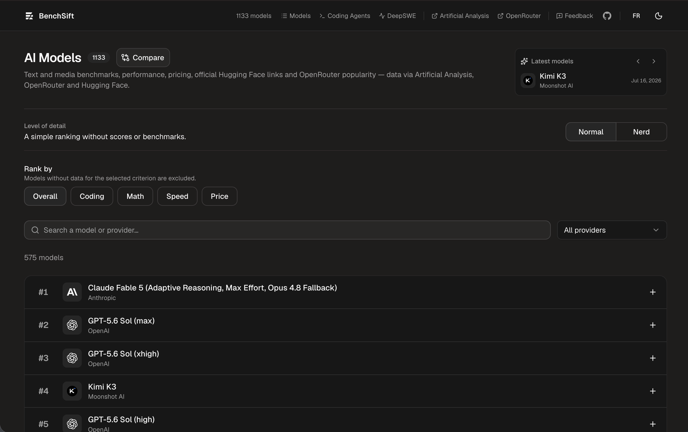

BenchSift
WebUn tableau de bord pour comparer les modèles d'IA selon leurs benchmarks texte et média, leur vitesse, leur prix et leur fenêtre de contexte.

Le projet
BenchSift rassemble au même endroit les données d'Artificial Analysis, d'OpenRouter et de Hugging Face pour comparer les modèles sur des critères concrets : qualité, vitesse et coût.
Les données sont rafraîchies automatiquement côté serveur, et le site fonctionne sans compte : la langue, le thème et la sélection de modèles à comparer restent dans le navigateur.
Fonctionnalités
- Catalogue de modèles : modèles de texte, d'image, de voix, de vidéo et utilitaires, avec leurs chiffres clés en un coup d'œil.
- Comparaison côte à côte : choisir plusieurs modèles et les comparer sur chaque métrique.
- Pages détaillées : fenêtre de contexte, vitesse de génération, prix, benchmarks texte (MMLU, HumanEval, MATH…) et classements ELO pour les modèles média.
- Classement des agents de code : une page dédiée aux agents de programmation.
- Recherche et filtres : retrouver un modèle par son nom ou son fournisseur instantanément.
- Français et anglais : langue détectée automatiquement, thème clair ou sombre.